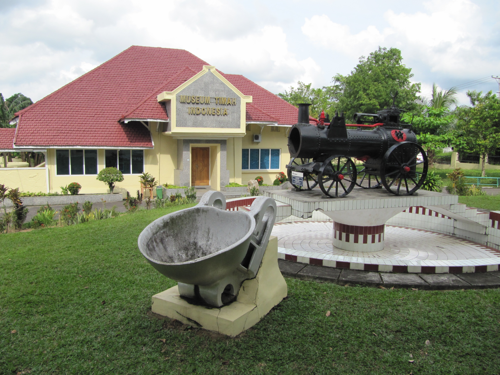
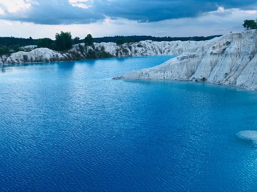
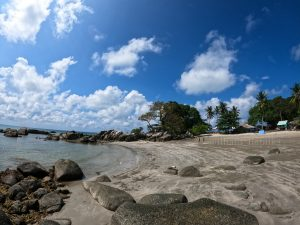

Sejarah

Wilayah Provinsi Kepulauan Bangka Belitung, terutama Pulau Bangka
berganti-ganti menjadi daerah taklukan Kerajaan Sriwijaya dan
Majapahit. Setelah kapitulasi dengan Belanda, Kepulauan Bangka
Belitung menjadi jajahan Inggris sebagai "Duke of Island". 20 Mei
1812 kekuasaan Inggris berakhir setelah konvensi London 13 Agustus
1824, terjadi peralihan kekuasaan daerah jajahan Kepulauan Bangka
Belitung antara MH. Court (Inggris) dengan K. Hcyes (Belanda) di
Muntok pada 10 Desember 1816.
Berdasarkan UU Nomor 27 Tahun 2000 wilayah Kota Pangkalpinang,
Kabupaten Bangka dan Kabupaten Belitung menjadi Provinsi Kepulauan
Bangka Belitung, dengan Pejabat Gubernur pertama Drs Amur Muhasyim
SH dan Ketua DPRD pertama H. Emron Pangkapi (Bang Emran).
Selanjutnya sejak tanggal 27 Januari 2003 Provinsi Kepualauan Bangka
Belitung mengalami pemekaran wilayah dengan menambah 4 Kabupaten
baru yaitu Kabupaten Bangka Barat, Bangka Tengah, Belitung Timur dan
Bangka Selatan.
Geografis
.jpg)
Keadaan alam Provinsi Kepulauan Bangka Belitung sebagian besar
merupakan dataran tinggi, lembah dan sebagian kecil pegunungan dan
perbukitan. Ketinggian dataran rendah rata-rata sekitar 50 meter di
atas permukaan laut dan ketinggian daerah pegunungan antara lain
untuk Gunung Maras mencapai 699 meter di Kecamatan Belinyu (P.
Bangka), Gunung Tajam Kaki ketinggiannya kurang lebih 500 meter di
atas permukaan laut di Pulau Belitung. Sedangkan untuk daerah
perbukitan seperti Bukit Menumbing ketinggiannya mencapai kurang
lebih 445 meter di Kecamatan Mentok dan Bukit Mangkol dengan
ketinggian sekitar 395 meter di atas permukaan laut di Kecamatan
Pangkalan Baru.
Kepulauan Bangka Belitung terdiri dari sekitar 470 pulau dan yang
berpenghuni hanya 50 pulau. Pulau-pulau tersebut antara lain 2 pulau
utama yakni Pulau Bangka dan Pulau Belitung. Pulau kecil lainnya
adalah Pulau Lepar, Pulau Pongok, Pulau Nanas, Pulau Mendanau, Pulau
Selat Nasik, Pulau Gersik, Pulau Bakau, Pulau Aur, Pulau Kalangbau,
Pulau Kelemar, Pulau Kuil, Pulau Lengkuas dan lainnya.
Wisata
Bangka Belitung merupakan provinsi yang terdiri dari 470 pulau,
sehingga Provinsi ini memiliki banyak sekali objek wisata alam
berupa pantai. Selain itu, Bangka Belitung juga memiliki objek
wisata lain berupa bangunan bersejarah dan bentu geografis alam yang
indah dan juga memiliki berbagai macam kuliner yang sudah sangat
terkenal di indonesia.
Danau Kaolin

Danau Kaolin merupakan danau yang berasal dari hasil tambang timah
di daerah Bangka Selatan, Toboali. Danau ini memiliki warna air
yang sangat indah sehingga menjadi destinasi wisata domestik yang
banyak dikunjungi.
Pantai Penyusuk

Pantai Penyusuk terletak di bagian Utara Pulau Bangka.Yang menarik
dari pantai ini adalah bebatuan granitnya yang sangat banyak dan
bertumpuk-tumpuk. Di tengah-tengah pantai terdapat batu granit
besar yang membagi pantai menjadi duaa bagian. Pada bagian Utara
berbatasan langsung dengan laut Natuna yang ombaknya sangat besar
sehingga pengunjung disarankan untuk tidak berenang disini. Namun
jika Anda ingin berenang, bisa ke bagian Barat yang ombaknya lebih
tenang karena terlindungi pulau-pulau kecil yang berjejer di depan
pantai. Airnya yang tenang membuat bagian Barat pantai ini cocok
bagi anak-anak untuk bermain, namun tetap saja harus dengan
pengawan orang tua.